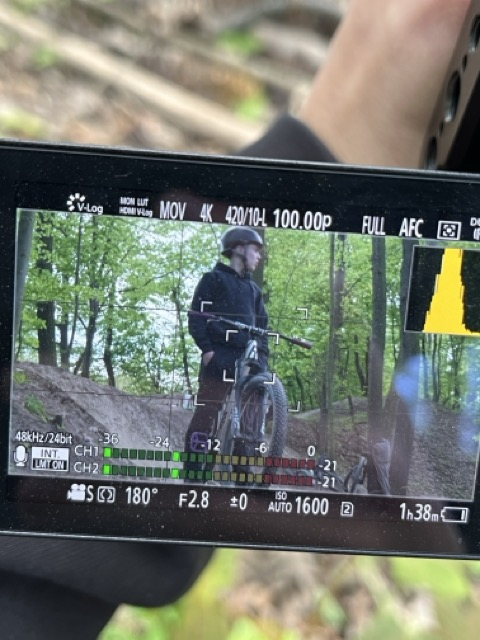
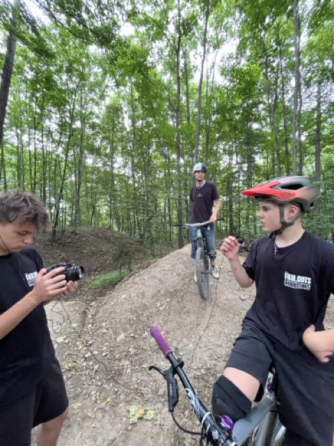
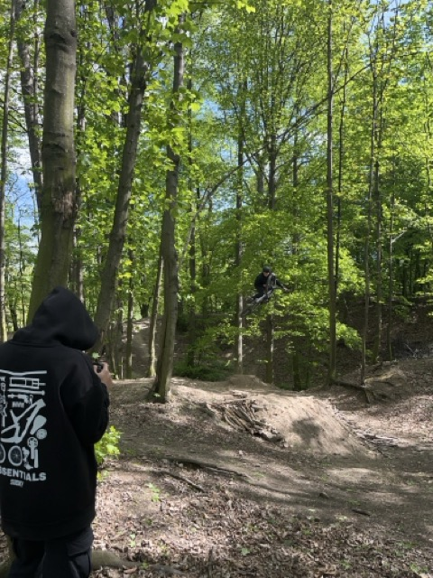
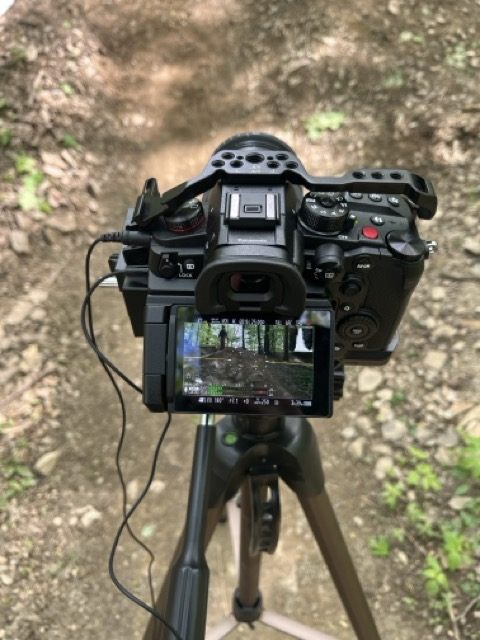
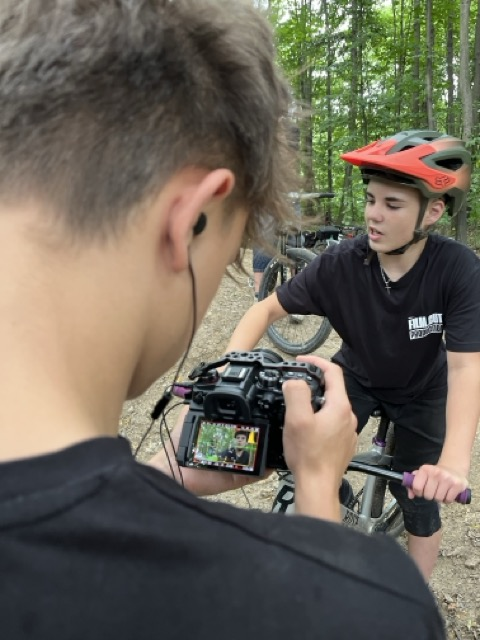
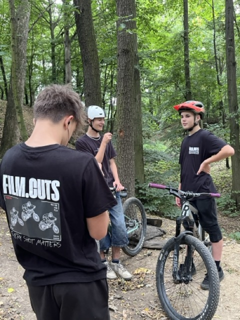
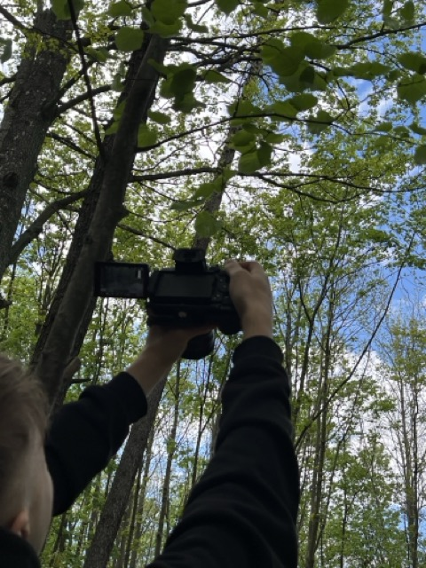
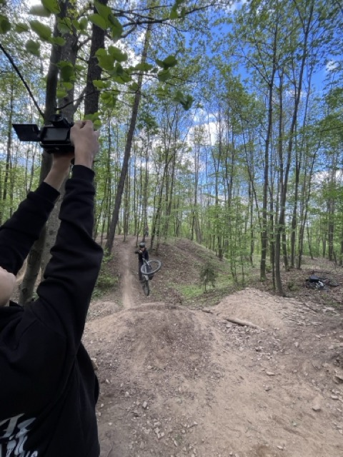

Documentary Short Film - Adam Liška
O projektu
Dokument sleduje šestnáctiletého MTB ridera Adama během tréninků a závodů. Projekt zkoumá dedication, vášeň a osobní růst skrze fotografii a střih.

Fotografie







